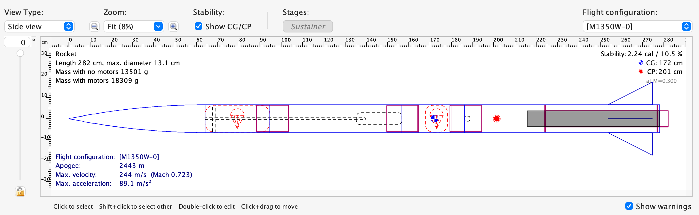
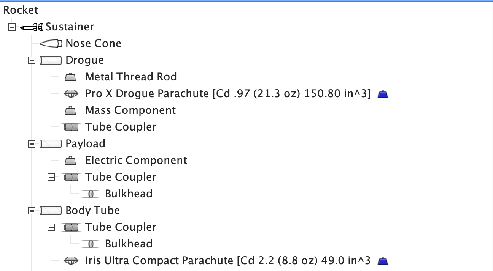
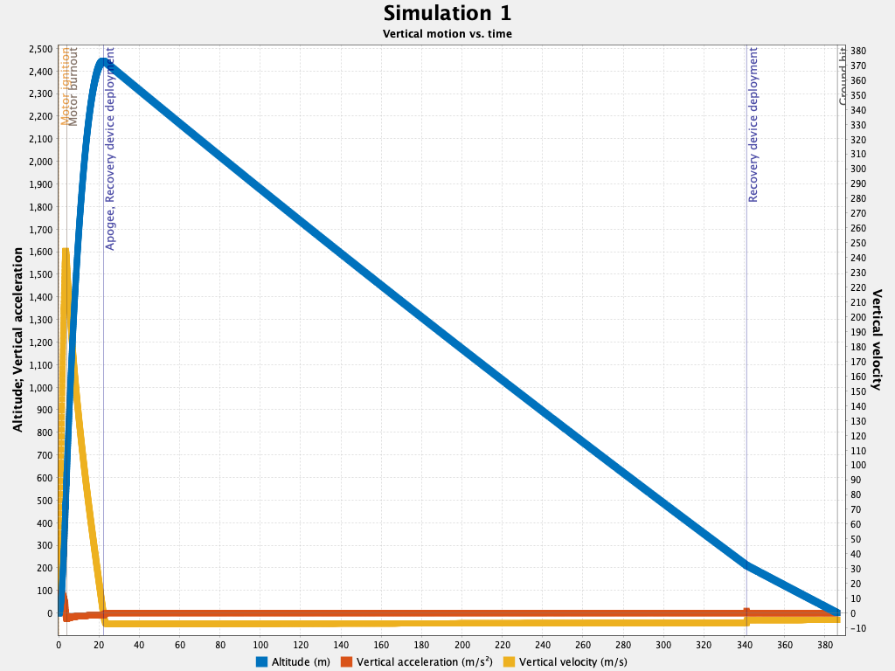
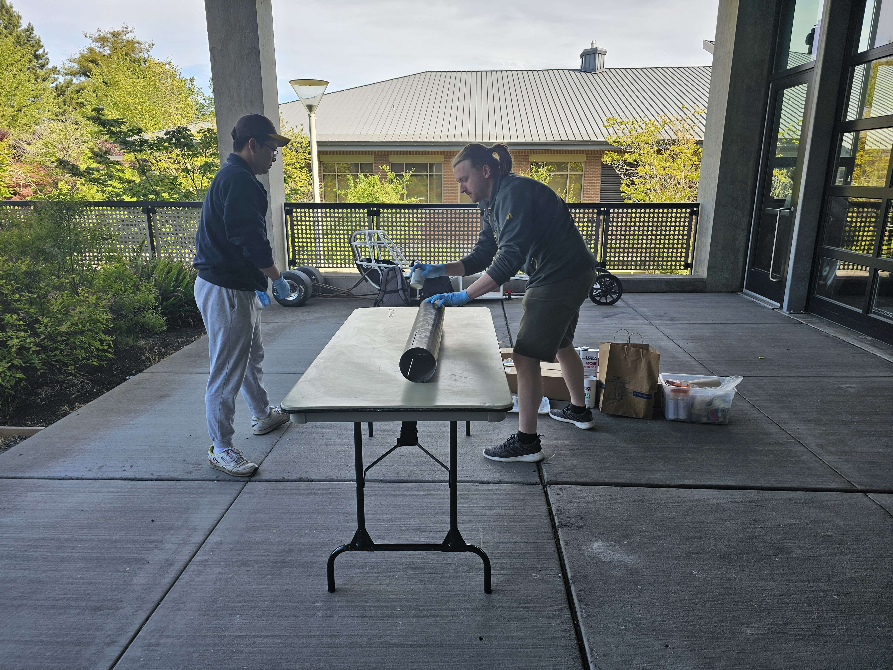
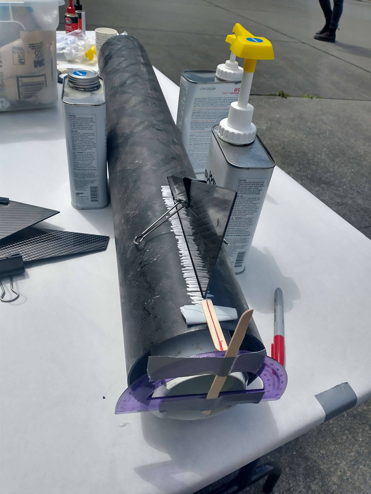
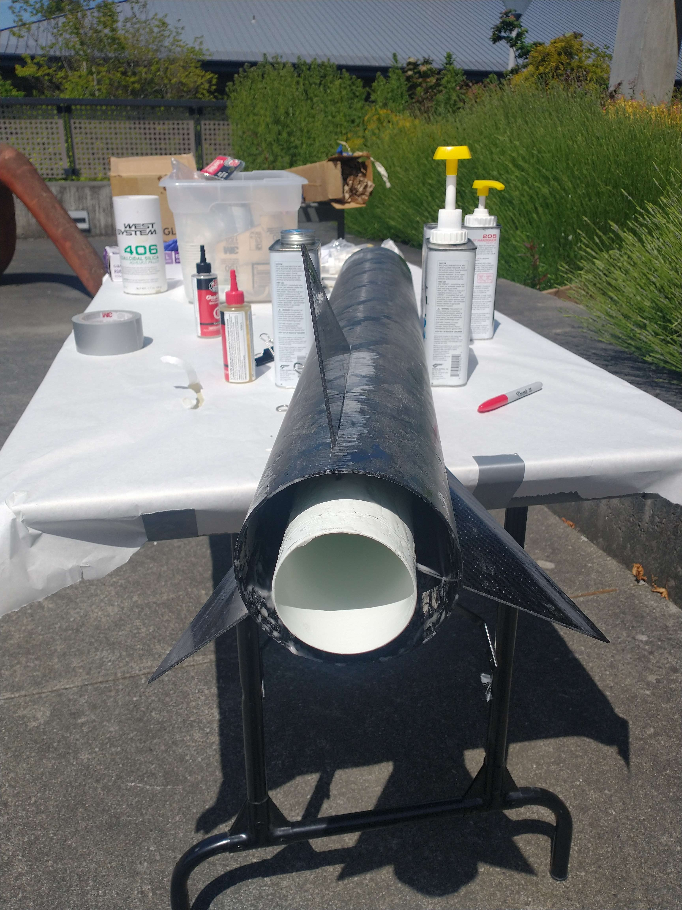
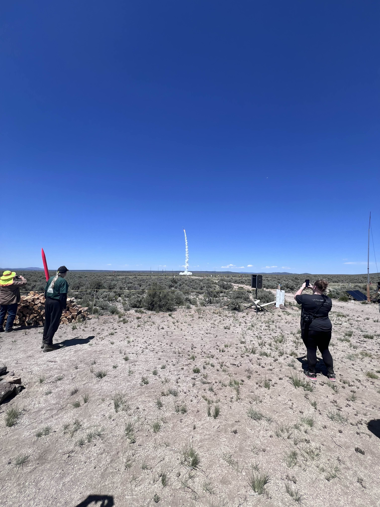
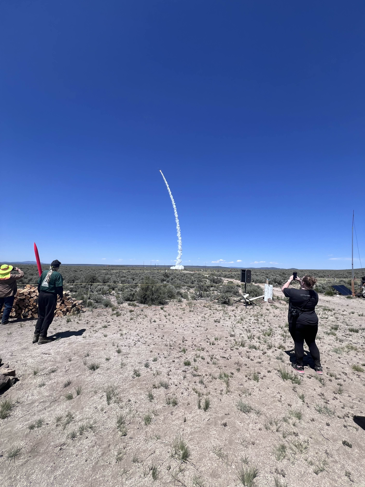

IREC-Oriented High-Power Rocket Fabrication
A sounding rocket project focused on stability analysis, mass distribution, OpenRocket simulation, and hands-on composite airframe fabrication for an IREC-oriented high-power rocket launch attempt.
Overview
A 6-foot high-power rocket built to carry an 8.8-pound payload to 10,000 feet, with OpenRocket simulation confirming a predicted apogee of 2,443m and a static stability margin of 2.24 calibers. Built by the Everett Community College STEM Club Rocket Team for a June 2024 launch attempt at the OROC launch site in Brothers, Oregon.
This project was part of the EvCC STEM Club Rocket Team's high-power rocketry work, oriented toward ESRA IREC-style competition preparation. The team designed and built a 6-foot high-power rocket intended to carry an 8.8-pound payload nearly two miles and prepared for a June 2024 launch. The project did not reach official IREC registration or competition entry. This page focuses on my fabrication work, OpenRocket simulation contributions, and a reconstructed technical review of the vehicle.
Problem & Approach
The goal was simple on paper: build a 6-foot rocket capable of carrying an 8.8-pound payload to 10,000 feet, and bring it back safely. The hard part was meeting all three requirements at once while keeping the vehicle stable. IREC-style competition demands a minimum 8.8-pound payload, GPS tracking, and a dual-deploy recovery system, all while maintaining stable flight. Stability shifts as the motor burns and mass drops, so we modeled the CG/CP relationship across configurations in OpenRocket and upgraded from a K-class to an M-class motor when the thrust numbers did not add up for the target altitude with payload on board. On the hardware side, a Featherweight GPS tracker handled telemetry and a dual-deploy altimeter managed the two-stage recovery sequence, deploying the drogue at apogee and the main parachute at lower altitude. The airframe consisted of carbon fiber tubing with fiberglass couplers and bulkheads, epoxy bonding throughout, and a PVC nose cone.
My Role
I led the OpenRocket simulation work, modeling CG/CP stability across payload, recovery, and motor configurations. When the K-class motor showed insufficient thrust to reach 10,000 feet with the 8.8-pound payload, I supported the decision to upgrade to an M-class motor based on the simulation output. On the fabrication side, my contributions included:
- Carbon fiber and fiberglass airframe assembly using WEST SYSTEM epoxy.
- Fin bonding and airframe finishing.
- Full airframe body sanding and surface preparation.
- Nose cone interior foam spray application for thermal insulation.
- Metal rod installation through the full vehicle length for structural continuity.
- Launch readiness preparation and parachute deployment testing at the OROC launch site in Brothers, Oregon.
Vehicle Architecture
The vehicle was designed around a dual-tube airframe: a PVC inner core handling motor mounting and internal structure, wrapped by a carbon fiber outer shell carrying aerodynamic and structural loads. This separation kept fabrication cost manageable on the inner structure while maintaining the strength and weight requirements on the outer airframe. Motor selection was driven by simulation. OpenRocket modeling showed the originally planned K-class motor was insufficient to reach 10,000 feet with the 8.8-pound payload on board, leading to an upgrade to an M-class motor before the final build. The full component breakdown and material rationale for each subsystem is in the table below.
| Subsystem | Component | Spec | Rationale |
|---|---|---|---|
| Structure | Inner tube | PVC | Low cost, easy fabrication, motor mount interface |
| Structure | Outer tube | Carbon fiber | High strength-to-weight ratio, handles aerodynamic and structural loads |
| Structure | Couplers / Bulkheads | Fiberglass | Machinable, reliable epoxy bond strength at section joints |
| Structure | Fins | Carbon fiber | Stiffness and resistance to fin flutter at high dynamic pressure |
| Structure | Structural rod | Metal, full length | Maintains axial continuity across all sections during flight loads |
| Nose Cone | Nose cone | PVC | Lightweight, machinable |
| Nose Cone | Interior fill | Foam spray | Thermal insulation against aerodynamic heating during high-speed ascent |
| Propulsion | Motor | Aerotech M1350W-0 | Upgraded from K-class after OpenRocket showed insufficient thrust for 8.8lb payload to 10,000ft |
| Recovery | Main parachute | Pro X Drogue 150.80in³ | Low-altitude deployment at 213m for safe landing |
| Recovery | Drogue parachute | Iris Ultra Compact 49in³ | Apogee deployment for high-altitude descent stabilization |
| Recovery | Altimeter | Entacore AIM dual deploy | IREC dual-deploy requirement, triggers both chute stages |
| Avionics | GPS tracker | Featherweight (open-source) | IREC tracking requirement, configurable without proprietary software |
| Payload | Ballast | Sandbag, 8.8lb | Dead weight to meet IREC minimum payload requirement |
Evidence
The following artifacts document the simulation work, fabrication process, and launch attempt. OpenRocket simulation files, design tree, and flight plot are reconstructed from the original .ork file. Fabrication and launch photos are from the original build and launch sessions.








Outcome
The team completed fabrication and conducted a launch attempt at the OROC launch site in Brothers, Oregon in June 2024. OpenRocket simulation predicted an apogee of 2,443m, a max velocity of 244 m/s, and a static stability margin of 2.24 calibers using the M1350W-0 motor configuration. The launch attempt produced visible flight evidence captured in photos and video. Post-launch performance data was not systematically recorded, and the project did not reach official IREC registration. The primary documented output of this project is a complete fabricated vehicle, a validated OpenRocket simulation, and hands-on experience with high-power rocket manufacturing from design through launch preparation.
Limitations
This project did not reach official IREC registration or competition entry. The exact cause of the launch outcome is not fully confirmed, but as visible in the launch photos, the rocket did not maintain a stable vertical flight path. Based on available evidence, late-stage modifications before launch may have shifted the CG rearward, reducing the actual stability margin below the simulated value of 2.24 calibers. The OpenRocket model predicted CG at 172cm and CP at 201cm, a separation of 29cm, but this may not have reflected the final as-built configuration. Environmental conditions at the Brothers, Oregon launch site were also not fully accounted for in the simulation. Launch site altitude, humidity, and wind affect air density and motor performance, and these variables were not updated in the OpenRocket model before the launch attempt. Some build details are reconstructed from remaining photos, the OpenRocket file, and project documentation rather than original records. Simulation values should be treated as estimates, not validated flight data. The OpenRocket model flags a post-landing ejection charge event for the M1350W-0 configuration. In a dual-deploy system, the altimeter controls both parachute deployments independently of the motor ejection charge, so this does not reflect an actual flight safety issue but is noted for transparency.
Reflection
The most important lesson from this project was configuration control. A rocket's stability margin can shift significantly with even small mass changes late in the build process. Maintaining a version-controlled OpenRocket file and re-checking CG/CP after every modification would have been essential for catching these issues before launch day. Beyond stability, I did not adequately account for site-specific environmental conditions at Brothers, Oregon, including launch site altitude, humidity, and wind. These variables affect air density and motor performance, and should have been factored into the simulation before the launch attempt. Both of these lessons now shape how I approach hardware projects: verify CG/CP after every late-stage modification, and always update simulation conditions to match the actual launch environment. This experience is directly informing an upcoming summer project: an ESP32-based active flight control system with PID-controlled fin actuators, designed in Fusion 360 and validated in Simulink. A dedicated project page will be added as the work develops.